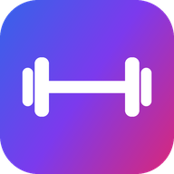

Фитнес
Программы тренировок, подходы, веса, бег и питание. Бесплатно, без регистрации — все данные хранятся только на вашем телефоне.
Android
Скачать приложение- Скачайте файл; если Chrome предупредит — «Всё равно скачать».
- Откройте скачанный fitnes.apk.
- Если телефон не даёт ставить — «Настройки» → разрешите установку из этого источника и вернитесь назад.
- «Установить». На предупреждение Play Защиты — «Всё равно установить».
iPhone
Открыть приложение- Нажмите кнопку выше — откроется приложение. Это должно быть в Safari.
- Уже в приложении нажмите «Поделиться» — квадрат со стрелкой вверх (внизу экрана или за «⋯»).
- Выберите «На экран "Домой"» → «Добавить».
- Запускайте с появившейся иконки — работает и без интернета.
Если иконка открывает эту страницу с инструкцией — удалите её и добавьте заново из приложения.
На iPhone во время бега экран должен быть включён: при погасшем экране iOS останавливает GPS. Шаги за день есть только на Android.